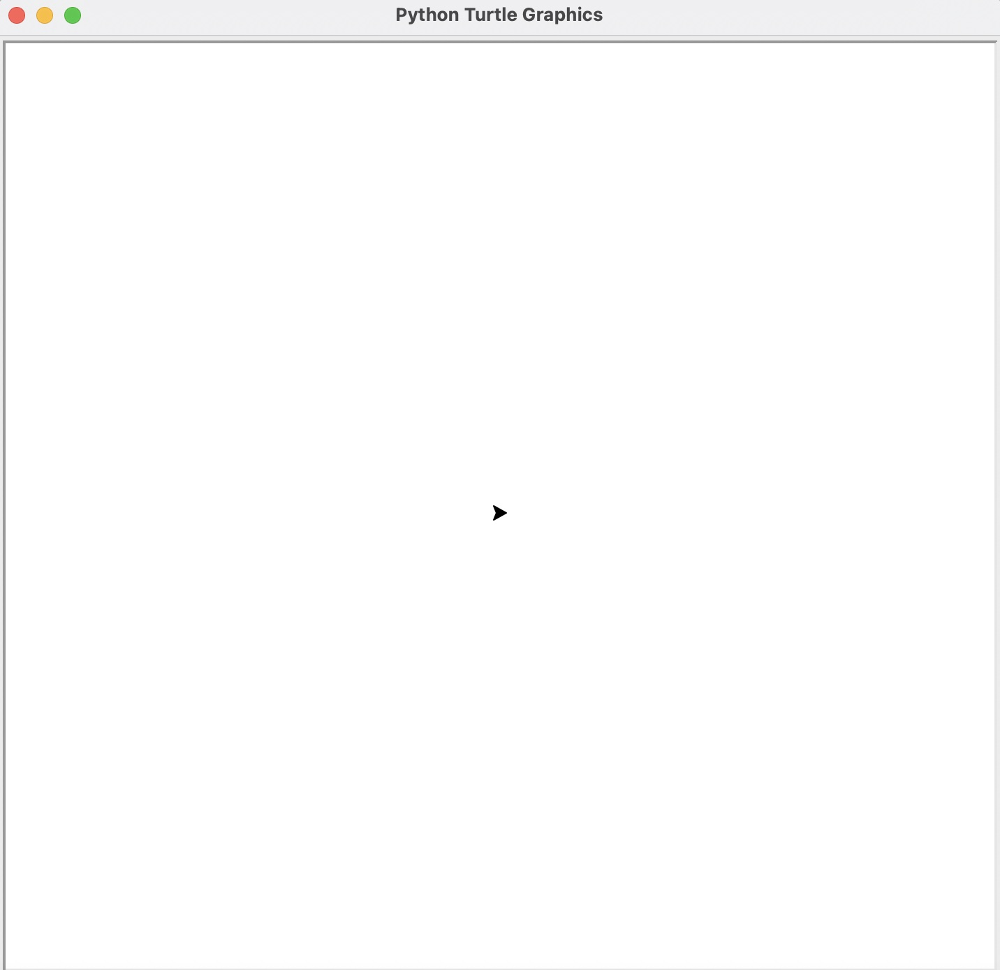
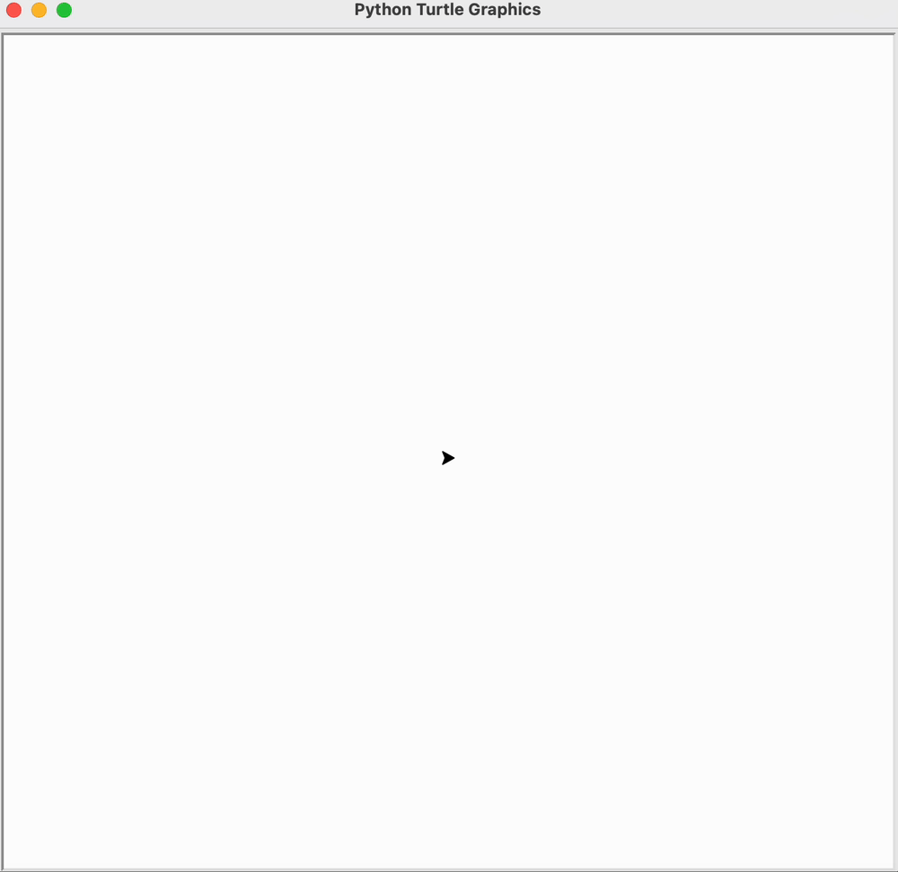
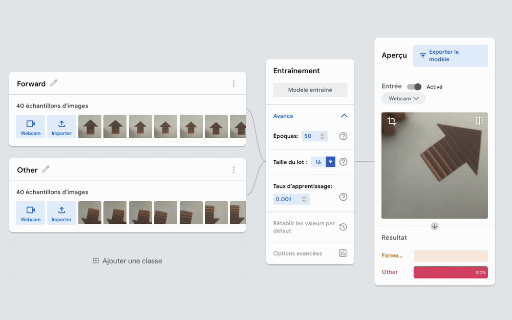

3. Reconnaissance d’images avec Python¶
Objectif: Déplacer la tortue Python avec de la reconnaissance d’images.
Âge |
14 à 18 ans |
Notions abordées |
Intelligence artificielle, classification d’images, programmation avec Python, condition, boucle. |
Durée |
4 heures |
Dispositif pédagogiques |
Par groupe de 2 |
Matériel |
Un laptop/tablette par groupe de 2, avec connexion à Internet |
Prérequis |
1. Connaissances de bases de Python et Annexe x: utilisation de Python dans un notebook |
3.1. La tortue Python¶
Commence par utiliser la tortue Python. La tortue Python est une sorte de robot que tu peux déplacer dans une fenêtre graphique.
3.1.1. Crée la tortue¶
Pour permettre à Python d’utiliser la tortue, il faut d’abord importer la librairie turtle (qui veut dire tortue en anglais), et ensuite executer la commande screen = turtle.getscreen() pour ouvrir la fenêtre graphique.
Ouvre l’éditeur Python Thonny, et créé un nouveau fichier en cliquant sur l’icône ‘+’. Copie le code ci-dessous:
# Import turtle library
import turtle
# Open screen and display turtle
screen = turtle.getscreen()
# Create a turtle object
my_turtle = turtle.Turtle()
Remarque: Tous les textes après les ‘#” sont des commentaires, et tu n’es pas obligé de les recopier. Ils aident cependant à comprendre ce que fait le code.
Sauvegarde le fichier sous le nom ‘1-turtle.py’.
3.1.2. Teste le code¶
Tu es maintenant prêt à exécuter le code. Clique sur le bouton ‘Run’ de l’éditeur Thonny. Si tu constates que le code ne s’exécute pas correctement, il se peut qu’il y ait une erreur dans le code que tu as écrit.
Tu devrais maintenant voir une fenêtre s’ouvrir, avec la tortue qui est placée au centre. La tortue est représentée par une tête de flèche.
{kind=link}
3.1.3. Dirige la tortue¶
Tu peux diriger la tortue avec les commandes:
my_turtle.forward(x): Pour avancer de x pixelsmy_turtle.backward(x): Pour reculer de x pixelsmy_turtle.right(x): tourner à droite de x degrésmy_turtle.left(x): tourner à gauche de x degrés
Par exemple, pour avancer de 100 pixels, tourner de 90 degrés, puis avancer de 100 pixels, tu peux utiliser le code suivant:
# Import turtle library
import turtle
# Open screen and display turtle
screen = turtle.getscreen()
# Create a turtle object
my_turtle = turtle.Turtle()
my_turtle.forward(100)
my_turtle.right(90)
my_turtle.forward(100)
Copie ce code dans l’éditeur Thonny et exécute-le. Tu devrais voir la tortue suivre le trajet correspondant:
{kind=link}
Quel code pourrais-tu utiliser pour faire faire un carré à la tortue?
3.2. Prendre une image avec la caméra¶
Le code suivant te permet de prendre une image avec la caméra. Exécute-le pour voir l’image prise de la Webcam apparaître.
# Necessary import
import cv2 # cv2 is used to take image from the camera
import myfunctions # myfunctions helps for taking picture and making predictions
from PIL import Image # PIL is used to deal with images
import time # time is used for making the computer wait
# Get camera object
camera_object = cv2.VideoCapture(0)
# Take a picture from the camera
picture_rgb = myfunctions.take_picture(camera_object)
# Display picture
picture_as_image_object = Image.fromarray(picture_rgb)
picture_as_image_object.show(picture_as_image_object)
Il faut libérer la caméra pour qu’elle puisse être réutilisée dans d’autre programme! Utilise cette instruction pour libérer la caméra.
# Release camera
camera_object.release()
3.3. Classification de l’image¶
Pour classifier l’image, tu auras besoin d’un modèle de reconnaissance créé avec la Teachable Machine. Voir l’activité 1 pour comment créer ce modèle.
3.3.1. Entraînement du classificateur¶
Pour contrôler la tortue, tu peux par exemple utiliser une flèche imprimée sur un papier, comme la flèche ci-dessous:
{kind=link}
Créer ensuite un classificateur avec deux classes dans la Teachable machine, que tu nommeras:
Forward: Avec des exemples de flèche vers le haut (qui serviront à faire avancer la tortue)
Other: Avec des exemples où la flèche ne va pas vers le haut
Prends une quarantaine d’images pour chacune des deux classes, et entraîne le classificateur. Teste-le ensuite, le classificateur devrait reconnaître quand la flèche est orienté vers le haut (classe ‘forward’), comme ci-dessous:
{kind=link}
Exporte ensuite le modèle pour Python (Voir activité 1), et copie le ficher model.tflite dans le répertoire de tes fichiers Python.
3.3.2. Classification de l’image¶
Ajout algorigramme
# Necessary import
import cv2 # cv2 is used to take image from the camera
import myfunctions # myfunctions helps for taking picture and making predictions
import matplotlib.pyplot as plt # matplotlib is used to deal with images
from PIL import Image # PIL is used to deal with images
import time # time is used for making the computer wait
# Get camera object
camera_object = cv2.VideoCapture(0)
# Initialize model
interpreter = myfunctions.initialize_model(model_path='model.tflite')
# Infinite loop
while True:
# Wait for one second
time.sleep(1)
# Take image from the camera
picture_rgb = myfunctions.take_picture(camera_object)
# Predict image class
prediction, probability = myfunctions.model_prediction(interpreter, picture_rgb)
# If prediction is class 0, class is 'Forward'
if prediction == 0:
print("Je reconnais la classe 'Forward'")
# If prediction is class 1, class is 'Other'
if prediction == 1:
print("Je reconnais la classe 'Other'")
Je reconnais la classe 'Other'
Je reconnais la classe 'Other'
Je reconnais la classe 'Other'
Je reconnais la classe 'Other'
---------------------------------------------------------------------------
KeyboardInterrupt Traceback (most recent call last)
/var/folders/2y/mv3z1v0945b60_l2bzjwpzj80000gn/T/ipykernel_33278/2209539620.py in <module>
16
17 # Wait for one second
---> 18 time.sleep(1)
19
20 # Take image from the camera
KeyboardInterrupt:
# Release camera
camera_object.release()
3.4. Contrôle la tortue avec la reconnaissance d’image¶
# Necessary import
import turtle # For using Python turtle
import cv2 # cv2 is used to take image from the camera
import myfunctions # myfunctions helps for taking picture and making predictions
import matplotlib.pyplot as plt # matplotlib is used to deal with images
from PIL import Image # PIL is used to deal with images
import time # time is used for making the computer wait
# Open screen and display turtle
screen = turtle.getscreen()
# Create a turtle object
my_turtle = turtle.Turtle()
# Get camera object
camera_object = cv2.VideoCapture(0)
# Initialize model
interpreter = myfunctions.initialize_model(model_path='model.tflite')
# Infinite loop
while True:
# Wait for one second
time.sleep(1)
# Take image from the camera
picture_rgb = myfunctions.take_picture(camera_object)
# Predict image class
prediction, probability = myfunctions.model_prediction(interpreter, picture_rgb)
# If prediction is class 0, class is 'Forward'
if prediction == 0:
my_turtle.forward(10)
# Release camera
camera_object.release()
3.5. Aller plus loin¶
Ajoute des classes avec des images de flèches vers la droite ou la gauche pour faire tourner la tortue à droite ou à gauche
Fais un classificateur qui utilise l’image de tube sur sol martien, et pour faire avancer la tortue si aucun tube n’est détecté, et fais s’arrêter la tortue lorsqu’un tube est détecté